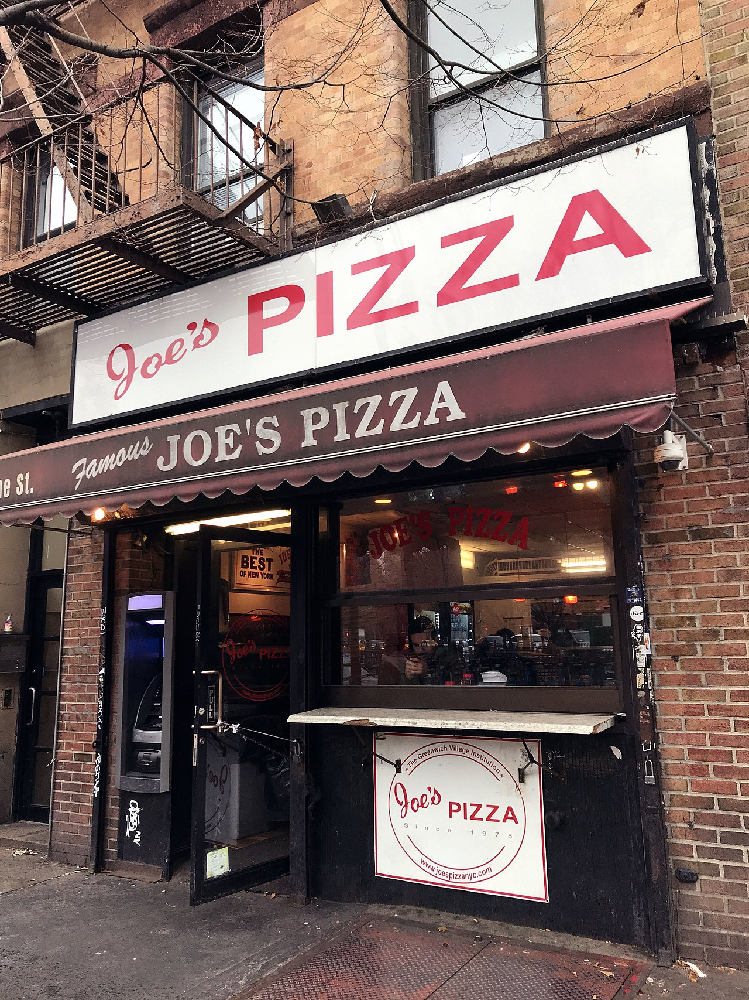

Times Square

軽食を片手に街の風景を楽しめる世界の繁華街の代表的風景、ショッピングに文化や流行が凝集した世界の交差点
Map
MoMA

20世紀以降の現代美術の発展と普及に多大な貢献をしてきた近代・現代美術のもっとも代表的な美術館の一つ
Map
Metropolitan
Museum of Art

極めて幅広いコレクションを持ち、古今東西問わずあらゆる時代、地域、文明、技法による作品を収集している
絵画・彫刻・写真・工芸品ほか家具・楽器・装飾品など300万点の美術品を所蔵。全館を一日で巡るのは難しいほどの規模を誇る、世界最大級の美術館
Map
Joe's
Pizza

1975創業老舗のピザ屋、ワンスライス2ドル手軽に本場ニューヨークピザの味わい
Map